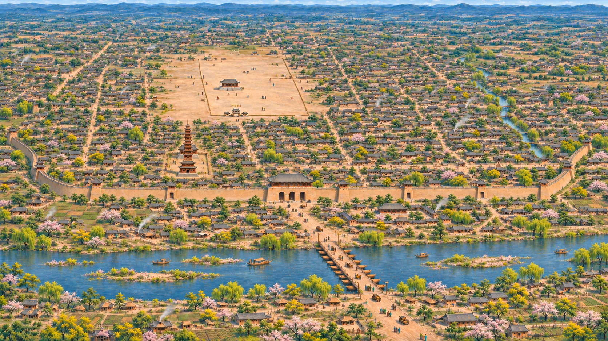
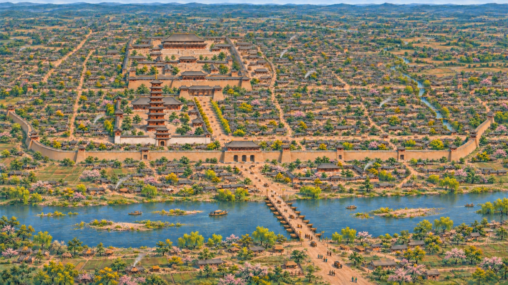
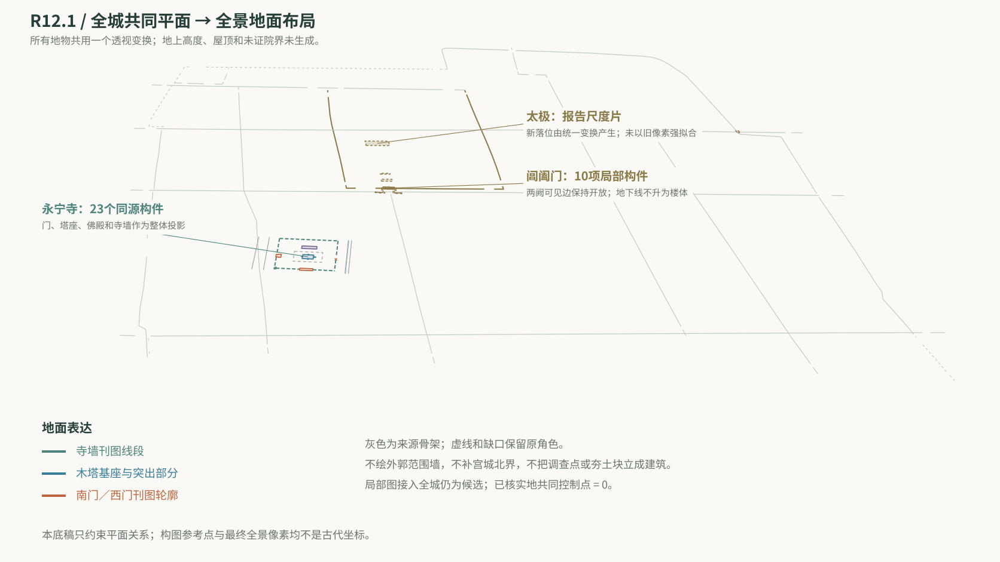
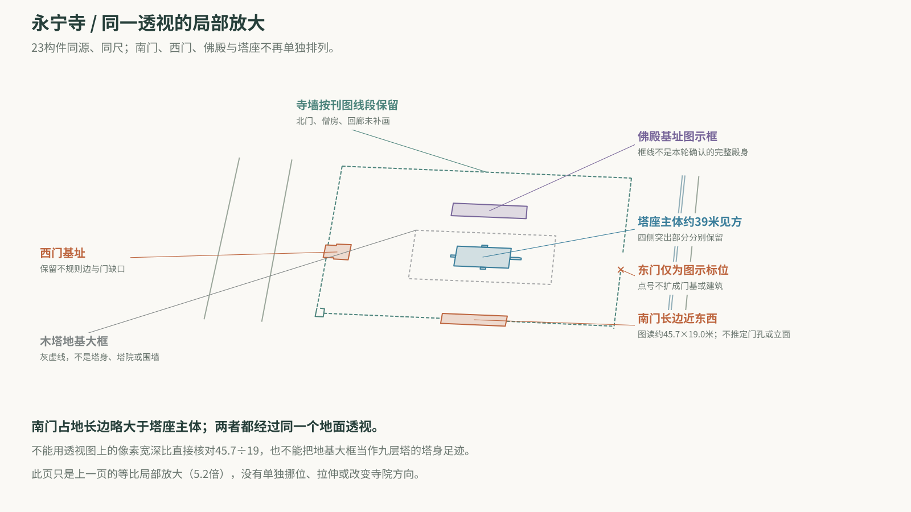
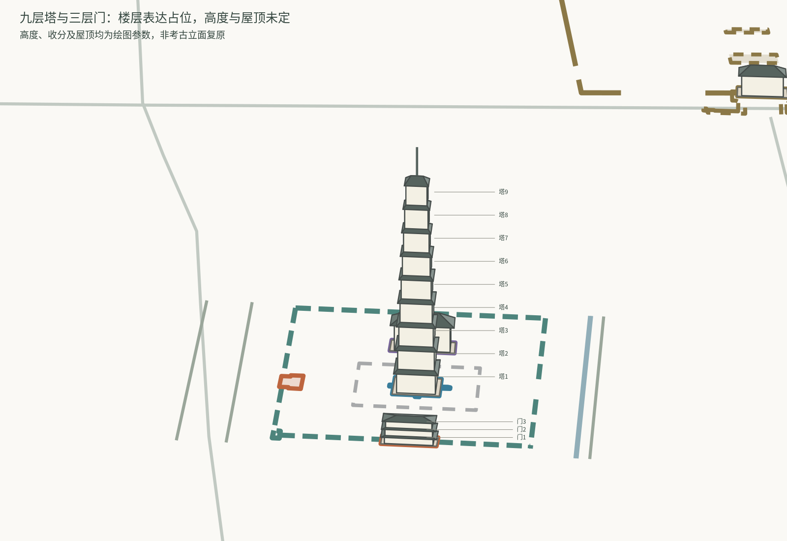
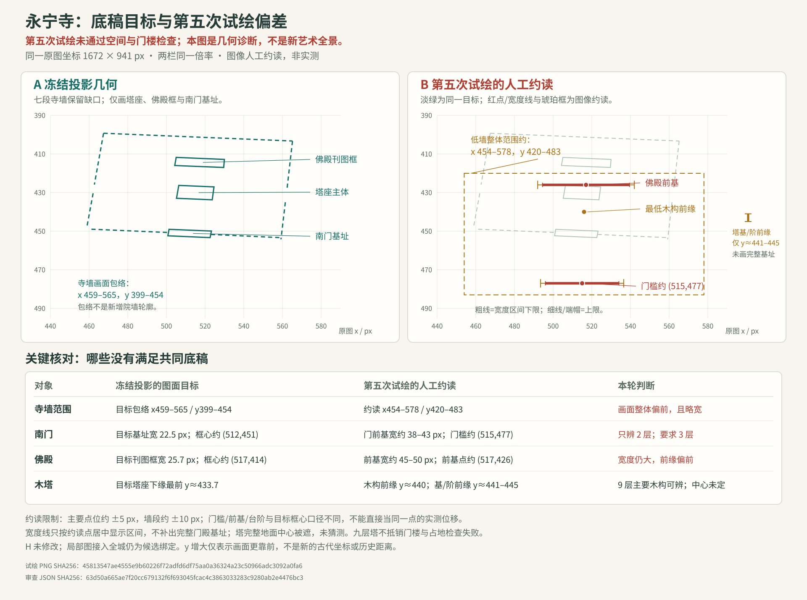

原图内部比例
同一来源图中的门、塔座、佛殿与墙段采用同一尺度，作为局部布局约束。
共同平面与试绘审查 · R12.1
共同平面与透视底稿已形成可复算的布局依据；本轮试绘仍未通过空间与形制核查。以下公开实际偏差、逐项依据和试绘过程。
V14试绘审查·未通过 当前首页继续采用已批准的 V12。V14 是未通过的试绘样张，不能作为已完成空间校正的成果或替换首页的候选。
以下为当前样张的实际审查结果。共同透视底稿与来源依据保持可回查；这些偏差尚未解决。
三幅图保持各自完整比例；并排模式比较 V14 与 V13 二修。



V14试绘审查未通过。无脚本时，三幅完整图依次展示。
先看布局，再看成图
底稿保留来源几何及其证据身份；全景是否遵循底稿，须逐项查看实际成图。
同一来源图中的门、塔座、佛殿与墙段采用同一尺度，作为局部布局约束。
透视视点、画面投影和上部建筑表现服务于阅读；它们不产生新的实测坐标。
局部图接入全城仍属候选绑定。共同坐标、内部比例与原址精度分别登记。

89项来源几何共用一套地面投影；示意视点不是历史测绘。
打开完整底稿
塔座、佛殿、南门与七段墙线保持来源内比例；局部放大只改变显示。
打开完整底稿
高度、收分及屋顶均为绘图参数，非考古立面复原；此底稿的正确计层不等于试绘通过。
打开完整底稿
冻结投影和人工约读分别画出；红色偏差不是新的遗址坐标，也没有改写试绘PNG。
打开完整底稿宫城2013图中的调查标记、版筑范围和不明时相线条保留其来源角色；外郭相关遗存范围与片区视窗也不自动成为城墙或坊界。
已试改但未通过的对象分别列出实际偏差，底稿成立不代表试绘达标。窄屏可横向查看完整表格。
| 对象 | 本轮状态 | 来源与空间依据 | 画面处理 | 保留的限制 |
|---|---|---|---|---|
| 共同平面进入统一透视底稿 | 本轮改变 | R12底稿用同一投影矩阵处理R11的89项几何；两处构图锚点只是旧图附近的艺术位置。底稿保留来源几何身份，新增古代坐标及已证现场共同控制均为0。 | 交付整幅与永宁寺局部透视底稿、计层绘图占位和偏差核验图；原始几何与来源角色保持。没有把底稿通过改写成成图通过。 | 统一投影使来源内部尺度可以一并检查，但没有解决外部落位、真北、历史相机和古代地面；不能把地面底稿当建筑屋顶或立面。 |
| 永宁寺整组占地与寺墙长宽 | 已试改，未通过 | 永宁刊图以50米／157像素的统一图尺换算，寺墙平均东西约212米、南北约292米；与既有表列212×301米（UNESCO1442 PDF1931附录6）的差异保留。23项构件共同接入R11；R12底稿的七段寺墙地面包围框约为x459—565、y399—454像素，画布1672×941。 | 尝试缩回来源占地，但未达到x459—565、y399—454的冻结底稿；本次公开未通过样张及差异，不接纳为已完成复原。 | 这些是刊图量读和虚拟投影显示数值，不是现场复测；刊图塔座中心向06a概略塔符的候选绑定尚无外部控制。底稿框限用于比较地面占位，不能量取屋顶外檐。 |
| 寺南门约45.7×19米基址与三重楼观分项核查 | 已试改，未通过 | 刊载原图南门相对边平均长约45.7×19.0米，长边近东西；方向仅相对来源北针。三重楼观来自既有《洛阳伽蓝记》校读，V13r2已单列为三层视觉检查，不由此平面图反推。 | 已尝试加宽并调整三层门，但最终楼层、基脚位置和尺度均未通过；仍须按底稿重新处理，不能沿用前版通过结论。 | 平面描线含实线和虚线；未知门道宽、柱网、楼层高度、屋顶收分和真方位。不能拿透视像素宽深比直接除出45.7／19，也不能把三道檐线自动当三层楼。 |
| 约39米塔座、木塔地基与九层塔身分别处理 | 已试改，未通过 | 刊图塔座主体外框在原图轴向约39.2×39.2米，四侧突出部分另列；更大的点划线框标为木塔地基，不能当塔身或塔院。九层塔身属于原有文献及视觉检查要求，平面资料未给出可复原的米制塔高。 | 九层视觉特征保持，塔的地面落位仍未通过；在审查中分别记录层数与基脚，不把前者替代后者。 | 39米为刊图量读约数，不据此改写旧表值或强行缩放。柱础符号含发掘与复原两类，本轮未逐点提取；层高、收分、屋顶和金刹仍含展示取值。 |
| 塔北佛殿、寺墙与未明门址各按图线性质处理 | 已试改，未通过 | 刊图佛殿基址图示框位于塔北，七段寺墙保留线性质。东门只有标位Point；北门没有可追摹轮廓，西南角边线不补闭合，不能按寺院文字总间数生成僧房格网。 | 横向归轴与墙体显现是实际试改；深度、尺度与墙段仍不接纳。未知北门、回廊和僧房格网没有据空白补成已证建筑。 | 佛殿框不是新取得的完整发掘平面，不能套用太极殿尺寸、柱网或屋顶。图例的发掘／复原分类针对点状柱础等符号，不能泛化为每段墙界的测绘性质。 |
| 阊阖门主基、三通道与两阙开放边 | 已试改，未通过 | S37来源图经自身20米图尺换算后，10项局部构件保留主门基、三通道可辨中段、两阙边线、地下虚线与连接路径。表列44.5×24.4米作为独立核对，不反向缩放S37描线；R11只是把图示原点向06a宫门图符作候选绑定。 | 全景尝试收小宫前门组；精确底稿仍保留S37十项来源构件与开放边。成图只作为未通过的试绘，不声称十项已经全部化为可靠建筑形体。 | 两阙和连接路径不构成已证完整上部楼阁或回廊；图线缺口保持缺口。图标北、局部原点和外部地理位置尚未用共同测点验证。 |
| 太极尺度片与宫门轴线距离分开判断 | 已试改，未通过 | R11太极约100×60米只是遗址尺度片，放在06a同名概略图符上。奈良2013阊阖—太极图示中心距约501.7米，06a同名图符约573.9米，差约72.2米；不同图源的差异没有被拉伸消除。R12同一H把太极尺度片地面中心投到约631、240像素；旧全景粗读约610、175没有参与拟合。 | 减少旧图夸大的主殿与重复宫院，但尚未完成宫轴层次；裸土空场列为待修的艺术假设，绝不把资料缺省解释为历史空置。 | 像素差是艺术构图参照，不是遗址偏移量。100×60米不是屋顶轮廓；夯土深约6米不能当台高。二号／三号门95／80米约距端点未定，三号—太极200／300米冲突仍保留。 |
| 2013宫城刊图继续作为独立对照层 | 沿用并复核 | 奈良2013图69提取24项：9项隔壁线、6项版筑范围、5项道路带、4项调查位置Point。默认隐藏并作为独立刊图对照；R12保留数据身份但不把该层24项送进清洁艺术导图。华林园南横带在图例中是道路，黑色调查块不代表门基，灰色版筑范围不代表殿身。 | 沿用来源身份与时相限制；调查标位、版筑面和道路带不转为已证宫门、殿身或北宫墙。 | 图69是结构与调查地概览，逐构件细分时相未定；不能直接当516—528同一年的完整宫城布局。调查图符约72×37米与已知阊阖门基尺度不同，不能以图符造门楼。 |
| 外郭、北宫界与普通街坊保留未定范围 | 仍不具体定位 | R11／R12仍将外郭相关遗存范围视为来源范围示意，将旧宫城北边闭合包络视为显示推定；两者均不进入清洁艺术导图。R12没有新增古岸几何、已证建筑高度或历史相机，底稿不补出北门、僧房和无证院内路。 | 这些内容继续以未具体定位或艺术概括登记；浮桥舟体支承木桥面的视觉特征保留，不新增古岸几何或证据等级。 | 全景中完整城墙、河岸、桥头、普通街坊及密集屋顶仍包含艺术概化；本轮不能据此宣布全城全部院落、建筑和同期边界已考古复原。 |
成图与来源逐项核对
观察写的是实际生成结果；来源说明与不能确定的部分同时保留。
本轮改变
已试改，未通过
永宁寺刊载原图：印页061图二右图／PDF第9页 · R11永宁寺共同平面与来源说明
返回全幅对照已试改，未通过
永宁寺刊载原图：印页061图二右图／PDF第9页 · R11永宁寺共同平面与来源说明 · 南门三重原文电子校释 · 前版V13r2检查口径
返回全幅对照已试改，未通过
永宁寺刊载原图：印页061图二右图／PDF第9页 · R11永宁寺共同平面与来源说明 · 日中联合调查报告：印页2—3 · 前版V13r2九层检查口径
返回全幅对照已试改，未通过
永宁寺刊载原图：印页061图二右图／PDF第9页 · R11永宁寺共同平面与来源说明
返回全幅对照已试改，未通过
阊阖门S37平剖图：PDF第1962页 · 阊阖门Cgm-3表列尺度：PDF第1927页
返回全幅对照已试改，未通过
奈良2013图69：印页52／PDF第1页 · R11宫城刊图来源与处理说明 · 太极遗址表列尺寸：PDF第1930页
返回全幅对照沿用并复核
奈良2013图69：印页52／PDF第1页 · R11宫城刊图来源与处理说明
返回全幅对照仍不具体定位
每轮保留自己的实际观察、问题与图像身份；后续试绘不覆盖先前记录。
寺院约为目标的2.2倍；门只有两层，九层塔不能核清。
回查本次试绘完整审查寺院仍偏前且增加额外南墙；门只有两层，九层塔不能核清。
回查本次试绘完整审查南门三层可辨；寺院仍约1.9倍，塔九层不能核清，佛殿偏右。
回查本次试绘完整审查塔九层可辨、寺院宽度接近；门只有两层，佛殿仍偏右，寺墙不清。
回查本次试绘完整审查塔九层可辨、佛殿横向归轴；门仍两层，寺门、殿基与寺墙再向前漂移。
回查本次试绘完整审查南门仍两层，前基约y477—479；寺南墙偏前，塔门独立基脚未核明。第六次修订未获接纳，单独附录回查。
回查本次试绘完整审查画面采用516—528年的综合研究窗口。共同工作平面与艺术全景均不能替代遗址测绘，未获依据的建筑边界继续待证。